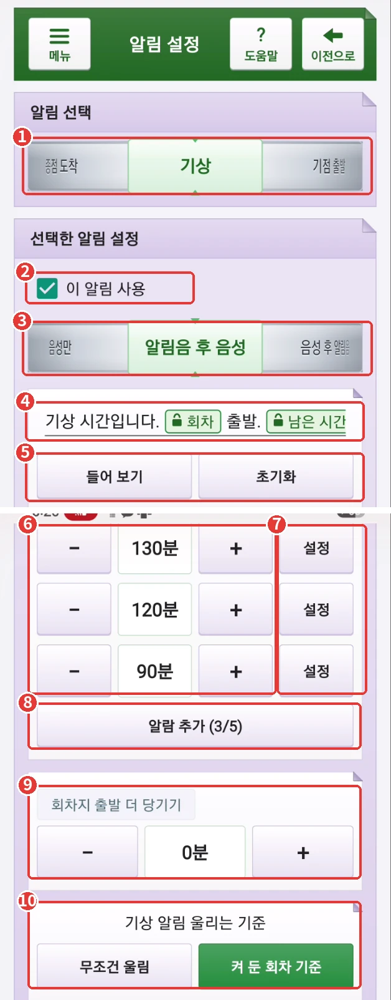
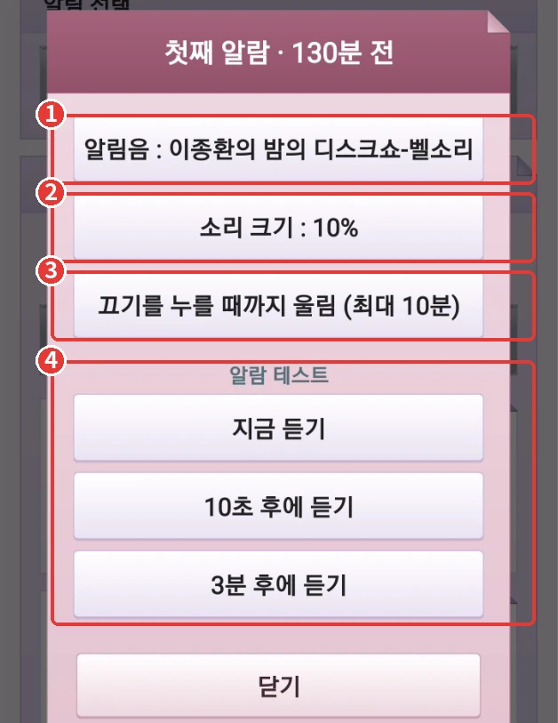
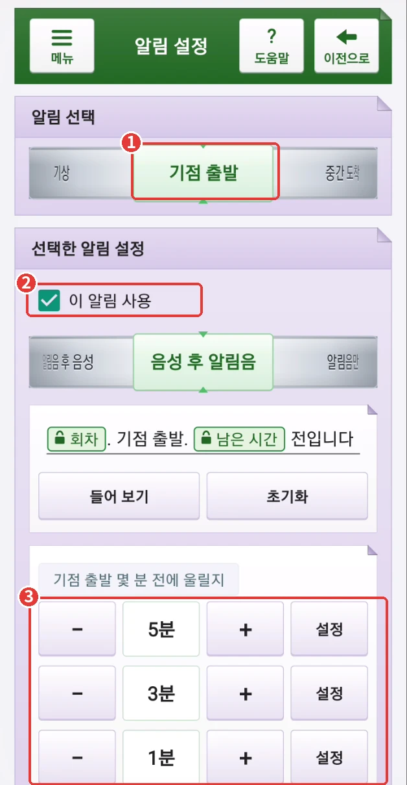
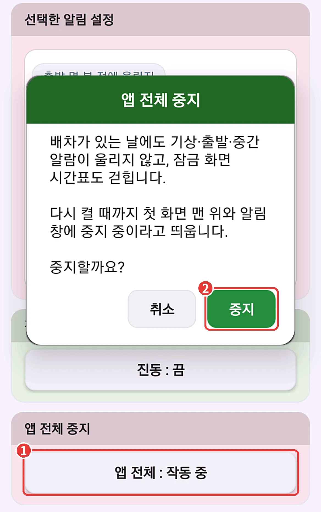
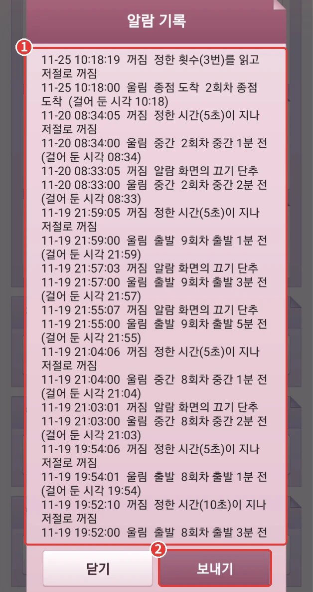

① 기상 · 기점 출발 · 중간 도착 · 중간 출발 · 종점 도착 가운데 무엇을 고칠지 고릅니다. 아래 설정은 모두 고른 알림 것입니다.
② 이 알림 사용 : 체크를 풀면 고른 알림이 울리지 않습니다. 풀 때 한 번 묻고, 첫 화면 맨 위에 빨간 띠가 뜹니다. 다시 체크하면 바로 켜집니다.
③ 몇 분 전에 울릴지 − · + 로 정합니다. 줄마다 따로 울립니다.
④ 설정 : 그 알람의 알림음 · 소리 크기 · 꺼지는 방식을 정합니다.
⑤ 알람 추가 : 다섯 개까지 둘 수 있습니다.
⑥ 회차지 출발 더 당기기 : 기점 칸이 빈 회차로 시작하는 날(회차지 출발)은 회차지까지 가야 하므로 기상만 이만큼 더 일찍 울립니다.
아래로 내리면 '기상 알림 울리는 기준'이 있습니다. 무조건 울림(처음 값)은 회차 체크와 상관없이 그날 첫 회차에 맞춰 깨웁니다. 켜 둔 회차 기준은 체크한 회차 가운데 가장 이른 회차에 맞춥니다.

① 알림음을 고릅니다.
② 소리 크기 : 휴대폰 소리 크기와 상관없이 이 크기로 울립니다.
③ 꺼지는 방식 : 끄기를 누를 때까지 울림(최대 10분) 또는 저절로 꺼짐.
④ 저절로 꺼짐일 때 울릴 길이입니다.
⑤ 알람 테스트 : 소리를 미리 들어 봅니다. 3분 후에 듣기를 누르고 앱을 닫아 두면 실제 알람과 같습니다.

① 출발 알림 : 회차마다 기점 출발 몇 분 전에 울릴지입니다.
② 이 알림 사용 : 체크를 풀면 출발 알림이 울리지 않습니다. 회차지 출발 회차의 중간 출발 알림도 함께 꺼집니다.
③ 알람 세 개를 둔 모습입니다. 5분, 3분, 1분 전에 따로 울립니다.
④ 진동을 켜고 끕니다.

① 앱 전체 : 작동 중 : 알림 설정 아래쪽에 있습니다. 누르면 중지할지 묻습니다.
② 중지 : 누르면 앱 전체가 멈춰 알람이 하나도 울리지 않습니다. 첫 화면 맨 위 빨간 띠를 누르면 다시 켜집니다.

① 알람 기록 보기 : 알림 설정 맨 아래에 있습니다. 알람이 언제 울리고 어떻게 꺼졌는지 최근 것부터 보여 줍니다.
② 보내기 : 휴대폰의 공유 창이 열립니다. 카카오톡이나 메일을 골라 직접 보냅니다.
중간 도착 알림을 켜 두면, 중간 출발 알림이 중간 도착보다 먼저 울리거나 같은 때 울리게 되는 회차가 생길 수 있습니다. 차가 아직 중간 지점에 도착하지도 않았는데 '중간 출발' 알람이 울리면 헷갈리기 때문에, 이런 회차는 아래처럼 안내합니다.
예 1. 쉬는 시간이 있는 회차
중간 도착 10시 00분, 중간 출발 10시 05분. 중간 도착 알림 2분 전, 중간 출발 알림 6분 전과 2분 전으로 둔 경우입니다.
예 2. 쉬는 시간이 없는 회차
중간 도착과 중간 출발이 모두 10시 00분. 중간 도착 알림 2분 전, 중간 출발 알림 2분 전으로 둔 경우입니다.
알아 두실 것